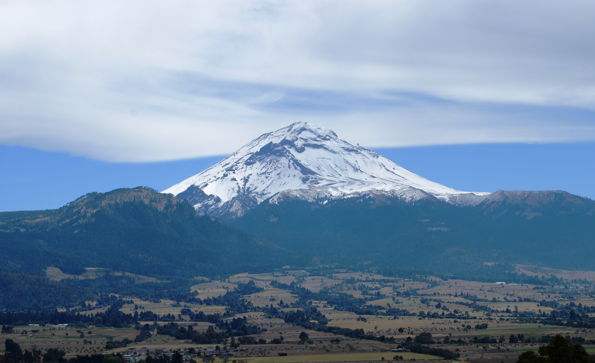

Su nombre, proveniente de la lengua náhuatl, compuesto por Popōca "que humea"
y tepētl "montaña", en conjunto significa «montaña que humea», debido
a su ya constante actividad desde la época prehispánica.
El Popocatépetl es un estratovolcán, y los estudios paleomagnéticos que se han hecho
de él indican que tiene una edad aproximada de 730,000 años. Su altura es de 5,500 m s. n. m.,
es de forma cónica, tiene un diámetro de 25 km en su base y la cima es el corte elíptico de un
cono y tiene una orientación noreste-suroeste. La distancia entre las paredes de su cráter
varía entre los 660 y los 840 m.
El Popocatépetl ha estado desde siempre en actividad, a pesar de haber estado en reposo
durante buena parte de la segunda mitad del siglo XX. En 1991 se inició un incremento en
su actividad y a partir de 1993 las fumarolas eran ya claramente visibles desde distancias
de alrededor de 50 kilómetros.
Además, existe una gran cantidad de registros desde la antigüedad sobre los
periodos de actividad del volcán, e incluso está registrada una erupción en
1927, que fue artificialmente provocada por la dinamitación del cráter para
extraer azufre del mismo. La última erupción violenta del volcán se registró del 18 al 19
de diciembre de 2000. El 25 de diciembre de 2005 se produjo en el cráter del volcán una
nueva explosión, que provocó una columna de humo y cenizas de 3 kilómetros de altura y la expulsión de lava.
El Popocatépetl ha sido uno de los volcanes más activos de México. Desde 1354 se han registrado
18 erupciones. En 1927 ocurrió una erupción de consideración, para iniciar así un periodo de reposo.
Después, el 21 de diciembre de 1994, tras varios años de inactividad, el volcán registró una explosión
que produjo gas y cenizas que fueron transportados por los vientos dominantes a más de 25 km de distancia.
Actualmente su actividad es moderada, pero constante, con emisión de fumarolas, compuestas de gases y vapor
de agua, y repentinas e imprevistas expulsiones menores de ceniza y material volcánico.
La última erupción violenta del volcán se registró en diciembre de 2000, lo que,
siguiendo las predicciones de científicos, motivó la evacuación de miles de personas
en las áreas cercanas al volcán. El 25 de diciembre de 2005 se produjo en el cráter del volcán
una nueva explosión, que provocó una columna de humo y cenizas de tres kilómetros de altura y
la expulsión de lava. Posteriormente en la mañana del 3 de junio de 2011, el Popocatépetl volvió
a emitir grandes fumarolas sin causar daños. El 20 de noviembre de 2011 tuvo lugar una gran explosión
que hizo temblar la tierra, escuchándose en las poblaciones cercanas a las laderas, pero sin mayor alteración.
El volcán registró la mañana del 16 de enero de 2012 una fumarola de vapor de agua y ceniza, sin que esto represente
riesgos para la población aledaña al coloso.
Las erupciones volcánicas pueden ser precedidas por cambios en la actividad sísmica y vulcanomagnética,
en la composición química de los gases, del agua de manantiales y algunas veces por deformación.
Para hacer un pronóstico volcánico adecuado es necesario reconocer estas señales indicativas de una
erupción y su temporalidad. Las erupciones del Popocatépetl que comenzaron el 21 de diciembre de 1994,
fueron predecidas por aumentos en los eventos sísmicos vulcanotectónicos (VT), cambios en temperatura y
concentración de sulfatos y cloruros en el lago del cráter y en la pCO2 en los manantiales

Turismo en el Popocatépetl
El Parque Nacional Izta-Popo Zoquiapan es un área protegida a gran altura en los estados mexicanos
de Puebla, México y Morelos. Sus volcanes activos Popocatépetl y el nevado Iztaccihuatl se encuentran
entre las cimas más altas del país. El parque tiene flora y fauna abundantes, incluidas muchas especies
de hongos y el conejo de los volcanes, en peligro de extinción. Muchos senderos tienen vista panorámica
de las montañas y comienzan en el Paso de Cortés.
Los amantes de la naturaleza podrán acampar y disfrutar de los increíbles paisajes y noches estrelladas,
así como practicar bicicleta de montaña y paseos a caballo.
De marzo a noviembre es la época ideal para visitar el parque, pero puedes darte una escapada en cualquier temporada del año.
Erupciones
El Popocatépetl es conocido por su alta actividad volcánica que se presenta comúnmente. Desde que se reactivó en 1994
hasta el momento ha presentado una serie de erupciones de las cuales la más violentas han sido la del año 2000, y
la madrugada del 18 de abril de 2016. Otra erupción fue la del 16 de febrero de 2018 tras el sismo de 7.2 en la escala
de Richter que azotó México. El volcán expulsó una gran fumarola de agua y ceniza que alcanzó los 700 metros de altura a las 18:24 hora local.
La última erupción registrada ha sido la del 11 de abril de 2020
Erupción del 9 de a enero del 2020
A través de su cuenta de Twitter, la Coordinación Nacional de Protección Civil (CNPC)
informó que la explosión ocurrió a las 06:33 horas de este jueves 9 de enero del 2020 y
la columna de ceniza alcanzó una altura los 3 km de altura, con dirección noreste.